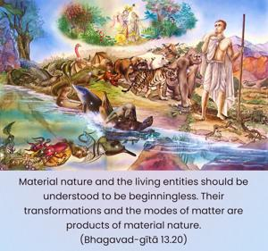
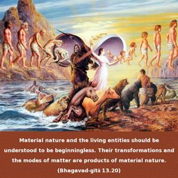
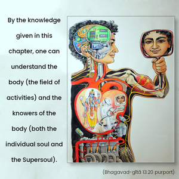
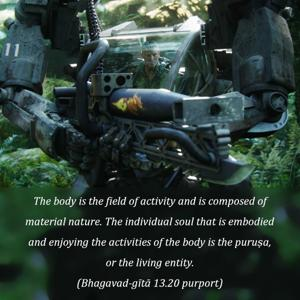
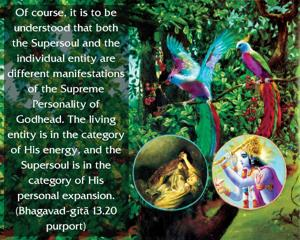
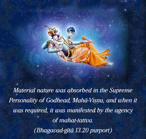

Material nature and the living entities should be understood to be beginningless. Their transformations and the modes of matter are products of material nature.






By the knowledge given in this chapter, one can understand the body (the field of activities) and the knowers of the body (both the individual soul and the Supersoul). The body is the field of activity and is composed of material nature. The individual soul that is embodied and enjoying the activities of the body is the puruṣa, or the living entity. He is one knower, and the other is the Supersoul. Of course, it is to be understood that both the Supersoul and the individual entity are different manifestations of the Supreme Personality of Godhead. The living entity is in the category of His energy, and the Supersoul is in the category of His personal expansion.
Both material nature and the living entity are eternal. That is to say that they existed before the creation. The material manifestation is from the energy of the Supreme Lord, and so also are the living entities, but the living entities are of the superior energy. Both the living entities and material nature existed before this cosmos was manifested. Material nature was absorbed in the Supreme Personality of Godhead, Mahā-viṣṇu, and when it was required, it was manifested by the agency of the mahat-tattva. Similarly, the living entities are also in Him, and because they are conditioned, they are averse to serving the Supreme Lord. Thus they are not allowed to enter into the spiritual sky. But with the coming forth of material nature these living entities are again given a chance to act in the material world and prepare themselves to enter into the spiritual world. That is the mystery of this material creation. Actually the living entity is originally the spiritual part and parcel of the Supreme Lord, but due to his rebellious nature, he is conditioned within material nature. It really does not matter how these living entities or superior entities of the Supreme Lord have come in contact with material nature. The Supreme Personality of Godhead knows, however, how and why this actually took place. In the scriptures the Lord says that those attracted by this material nature are undergoing a hard struggle for existence. But we should know it with certainty from the descriptions of these few verses that all transformations and influences of material nature by the three modes are also productions of material nature. All transformations and variety in respect to living entities are due to the body. As far as spirit is concerned, living entities are all the same.